✦ 義守大學圖資處
系統維護操作手冊
專業、高效、視覺化的後台操作指南，全章節完整收錄
系統核心設定
- 1. 系統參數設定
- 2. 圖片裁切功能
- 3. 使用者管理
版面與頁面管理
- 4. 網頁版面管理
- 5. 自訂頁面維護
- 6. 廣告橫幅設定
內容維護管理
- 7. 首頁區塊設定
- 8. 圖片區塊設定
- 9. 最新消息發布
使用說明
本手冊旨在協助系統管理員快速上手後台操作，涵蓋系統核心、版面佈局及內容發布等功能。建議初次使用者依階段順序閱讀，或利用左側導航直達特定章節。
1. 系統參數設定
介面截圖區
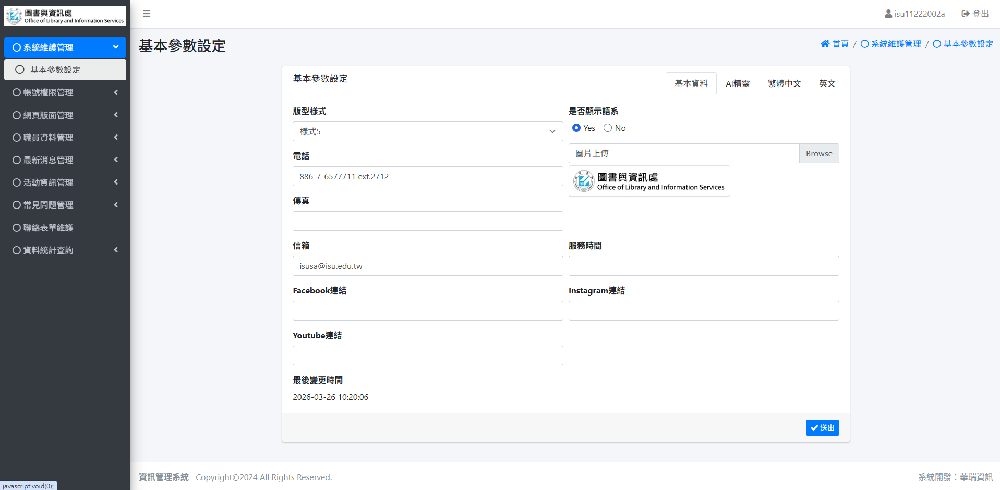
欄位詳細說明表
| 欄位名稱 | 設定說明與備註 |
|---|---|
| 網站標題 / 頁尾名稱 | 設定於前台瀏覽器分頁及頁尾顯示的名稱。 |
| 連絡電話 / 信箱 | 供前台系統聯繫使用的官方資訊。 |
| 版型樣式 | 關鍵設定，將決定首頁廣告橫幅的顯示比例與排版。 |
版型樣式：影響廣告橫幅
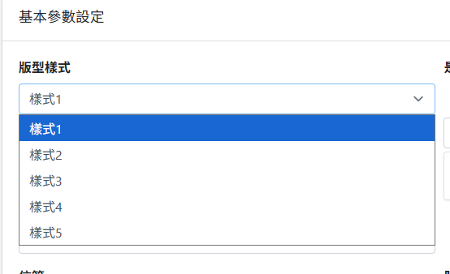
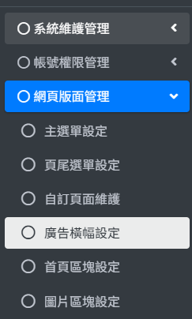
判定樣式圖案大小
-
開啟開發人員工具
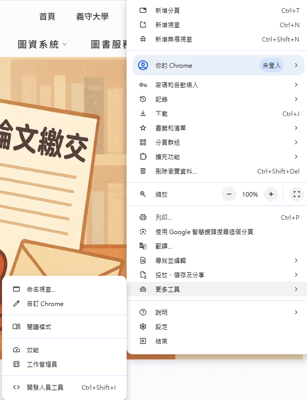
圖 4｜開啟「開發人員工具」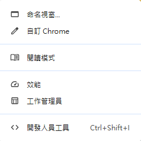
圖 5｜提示圖示位置 -
選取 Elements 元素面板
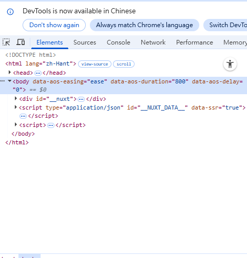
圖 8｜選取 Elements 元素面板 -
檢視廣告元素 CSS 尺寸
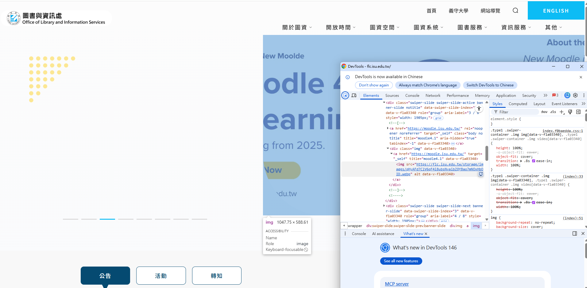
圖 10｜檢視廣告元素 CSS 尺寸 -
各樣式預覽截圖
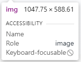
樣式一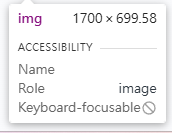
樣式二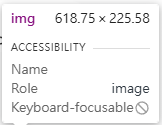
樣式三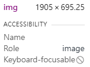
樣式四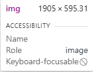
樣式五
建議製作尺寸
2. 圖片裁切功能
裁切操作流程
-
點選「設計」頁籤
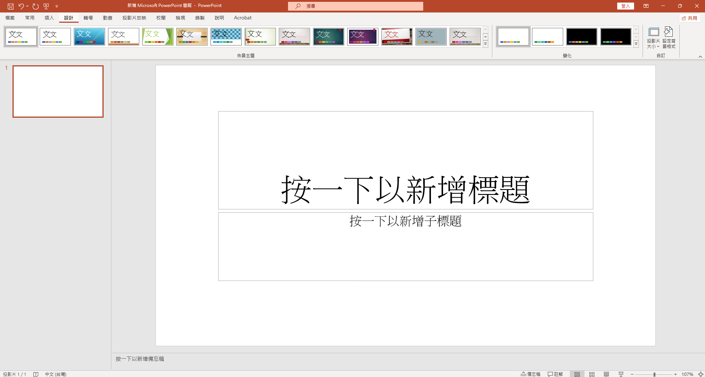
圖 16｜點選「設計」頁籤 -
點選「投影片大小」
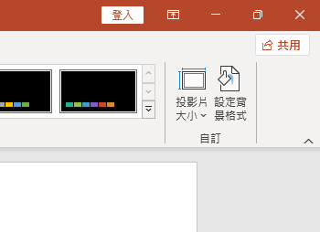
圖 17｜點選「投影片大小」 -
輸入精確寬度與高度
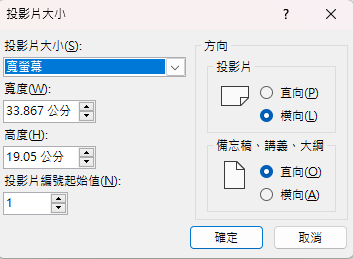
圖 18｜輸入精確寬度與高度 -
依畫布調整圖片素材
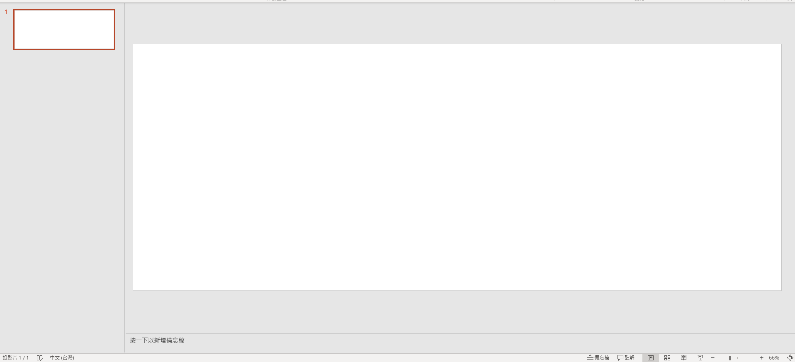
圖 19｜依畫布調整圖片素材 ➔ 建議製作尺寸 -
確認邊框預覽
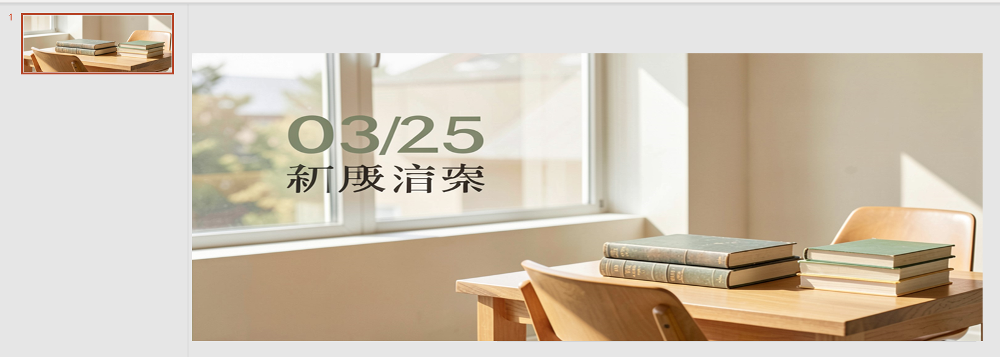
圖 20｜確認邊框預覽 -
檔案 > 另存新檔
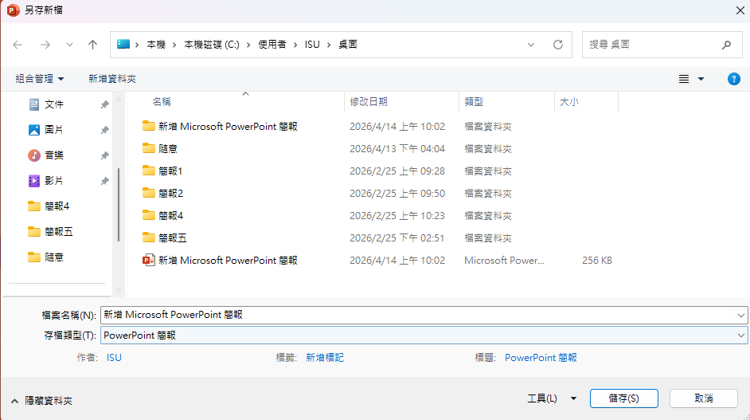
圖 21｜檔案 > 另存新檔 -
儲存類型選擇 JPEG
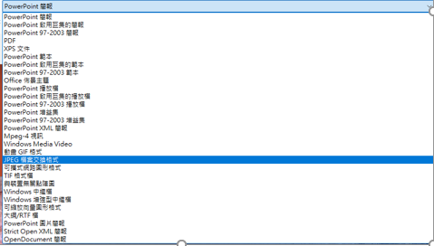
圖 22｜儲存類型選擇 JPEG
3. 使用者管理
介面截圖區
-
人員列表清單
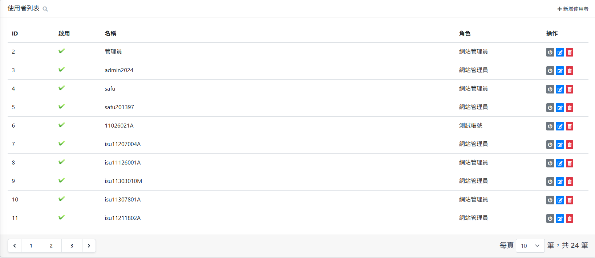
圖 23｜人員列表清單 -
點擊「新增使用者」按鈕
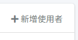
圖 24｜點擊「新增使用者」按鈕 -
展開詳細基本資料
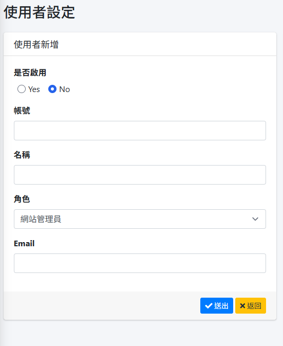
圖 25｜展開詳細基本資料 -
填寫完成並點擊送出
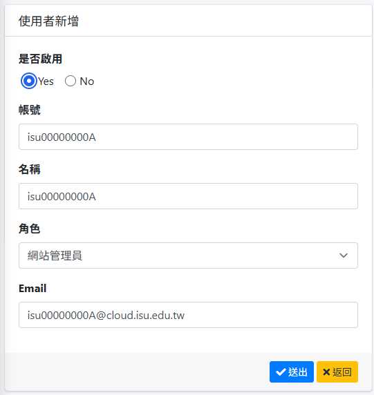
圖 26｜填寫完成並點擊送出
欄位詳細說明表
| 欄位名稱 | 設定說明與備註 |
|---|---|
| 登入帳號 | 人員登入後台時所使用的唯一 ID。 |
| 預設密碼 | 系統建立時分配的初始密碼。 |
| 顯示姓名 | 於系統右上角或記錄中顯示的人員名稱。 |
| 權限群組 | 勾選該人員可操作的後台單元（例如僅能維護最新消息）。 |
4. 網頁版面管理
介面截圖：總覽對照
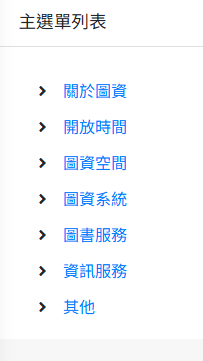
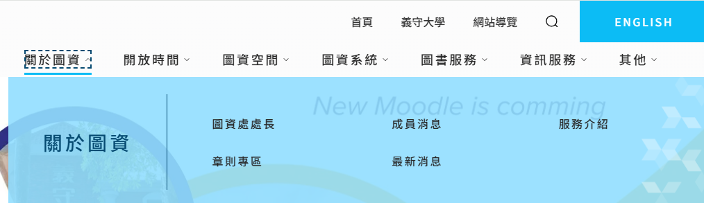
主選單分層設定與新增
-
階層化選單呈現效果
設定完成後，後台列表將以樹狀結構呈現階層關係，前台則自動產生下拉選單。
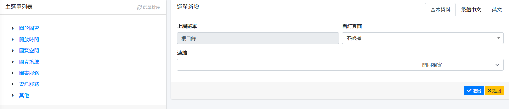
圖 29｜前端：自動產生的下拉選單效果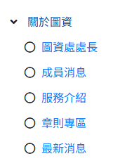
圖 31｜後端：選單列表分層效果 -
場景一：建立根目錄項目
在建立選單時，將「上層選單」設定為 「根目錄」，並同步設定標題、路徑與顯示類型。
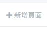
圖 30｜設定選單標題、路徑與顯示類型 -
主選單新增－設定為「根目錄」
在選單設定頁面，於「上層選單」下拉選單中選擇 根目錄，即可將該項目設為第一層主選單。
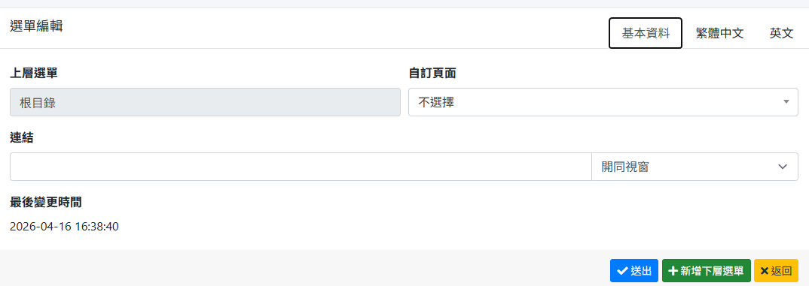
圖 32｜主選單新增：上層選單設定為「根目錄」 -
主選單新增－建立下拉子選單
在選單列表中找到父級項目，點擊右側的 綠色新增按鈕 (+) 以新增下層選單。
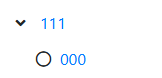
圖 33｜點擊項目右側的「新增下層選單」按鈕 -
主選單新增－確認上層選單聯結
進入新增頁面後，系統會自動將「上層選單」鎖定為剛才點選的父級項目名稱。
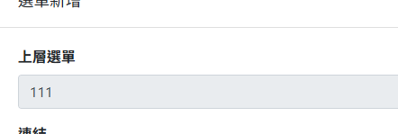
圖 34｜新增子選單時系統自動帶入上層項目名稱
欄位詳細說明表
| 欄位名稱 | 設定說明與備註 |
|---|---|
| 選單名稱 | 預期顯示於前台導航列的文字。 |
| 連結 | 手動貼入 URL，點擊後跳轉外部連結。 |
| 自訂頁面 | 從系統製作好的頁面清單中選取。 |
| 上層選單 | 關鍵設定。選擇「根目錄」則為第一層；選擇特定項目則成為該項目的子選單。 |
5. 自訂頁面維護
頁面類型與截圖
-
步驟一：選擇自訂頁面類型
在選單管理中，針對欲顯示自訂內容的項目，將其「顯示類型」設定為 自訂頁面。
 圖 35｜將顯示類型切換為「自訂頁面」
圖 35｜將顯示類型切換為「自訂頁面」 -
步驟二：新增頁面並進行細節設定
點擊列表上方的 「+ 新增頁面」 按鈕，開始建立頁面基本資訊。
 圖 36｜點擊「新增頁面」按鈕
圖 36｜點擊「新增頁面」按鈕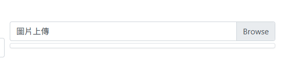
圖 37｜填寫頁面基本資訊與設定 -
步驟三：選擇呈現類型 (一般 vs 分頁)製作模式選擇：
- 一般：內容依序堆疊，適合短篇文章。
- 分頁：自動轉為 Tab 標籤，適合長篇內容。
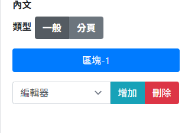
圖 38｜選擇一般或分頁製作模式 -
步驟四：製作頁面內容
利用內建編輯器進行文字、圖片或檔案的排版設計，輕鬆完成自訂頁面製作。
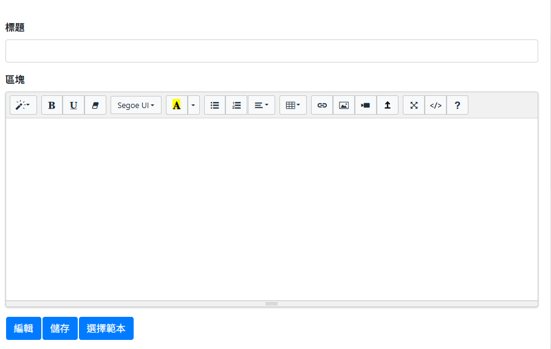
圖 39｜利用區塊編輯器製作頁面內文 -
步驟五：預覽與發布確認
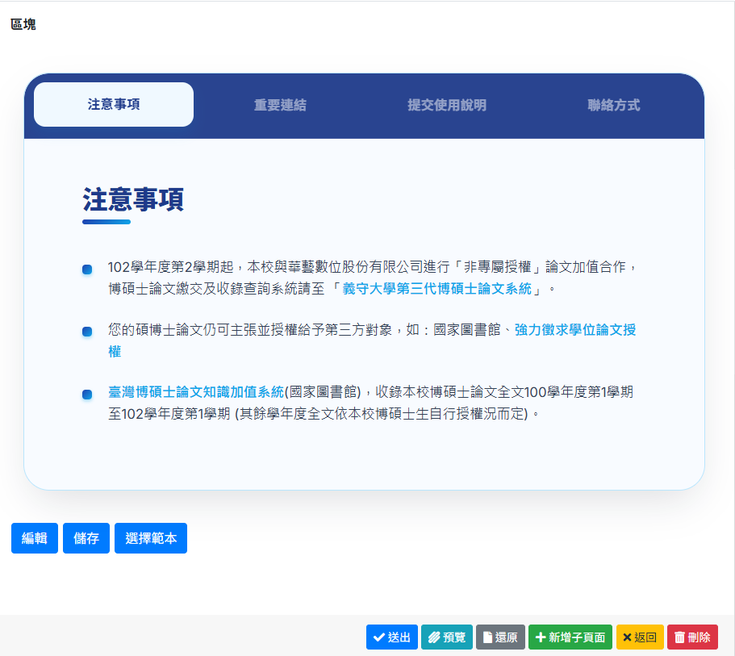
圖 40｜發布前預覽確認最終呈現效果
欄位詳細說明表
| 欄位名稱 | 設定說明與備註 |
|---|---|
| 一般 (類型) | 所有區塊自上而下連續顯示. |
| 分頁 (類型) | 區塊會轉化為分頁標籤，方便長文閱讀。 |
| 縮略圖 | 設定頁面的代表圖片。 |
6. 廣告橫幅設定
介面截圖區
-
橫幅管理與新增設定
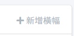
圖 41｜廣告橫幅新增按鈕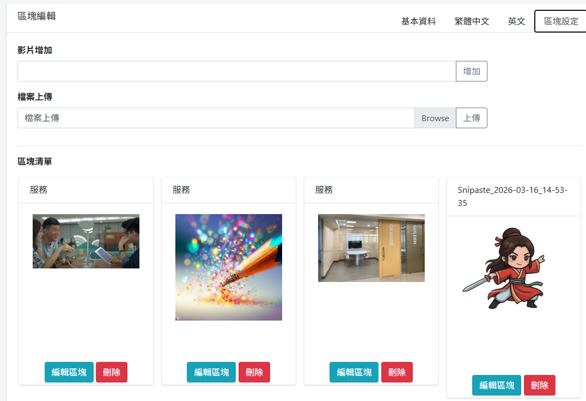
圖 43｜廣告橫幅管理與詳細設定界面
欄位詳細說明表
| 欄位名稱 | 設定說明與備註 |
|---|---|
| 標題 | 內部辨識用或圖片滑過後的文字提示。 |
| 橫幅圖片 | 上傳製作好的廣告圖，格式限 JPEG。 |
| 連結位置 | 設定圖片點擊後導向的網址。 |
7. 首頁區塊設定
-
點擊「新增區塊」按鈕
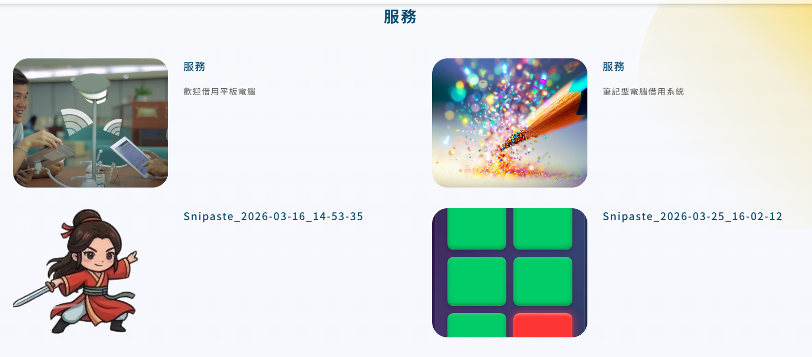
圖 44｜點擊「新增區塊」按鈕 -
設定區塊標題與是否啟用圖 42｜設定區塊標題與是否啟用
-
區塊編輯
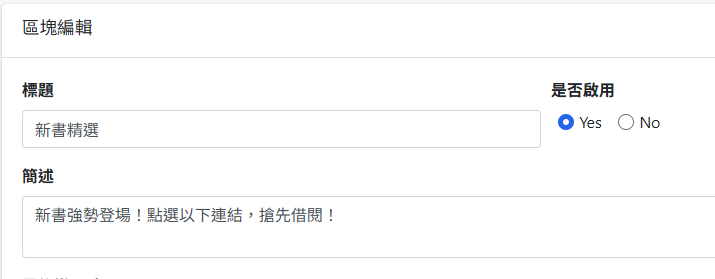
圖 45｜區塊內容管理界面
-
一般區塊 1 後台設定與前台呈現
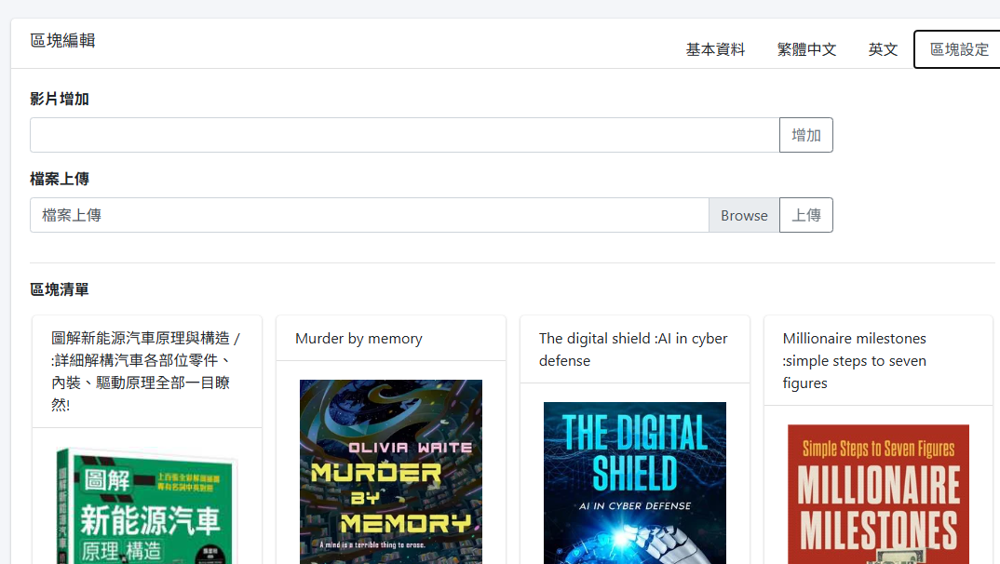
圖 47｜一般區塊 1：後台設定詳情圖 48｜一般區塊 1：前台呈現效果
-
一般區塊 2 後台設定與前台呈現
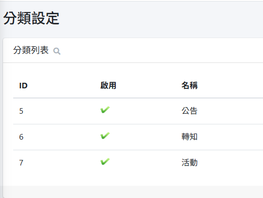
圖 49｜一般區塊 2：後台設定詳情 圖 50｜一般區塊 2：前台呈現效果
圖 50｜一般區塊 2：前台呈現效果
-
影音區塊後台設定與前台呈現
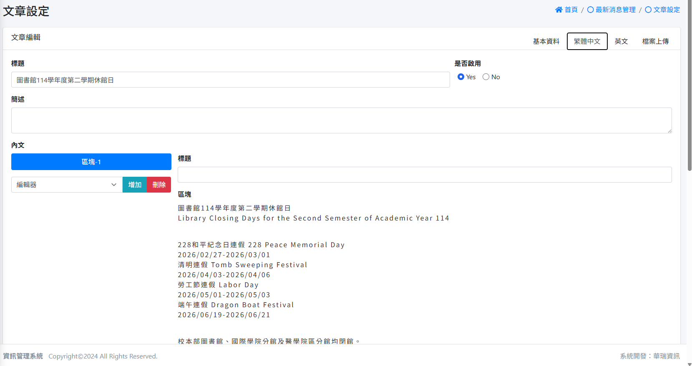
圖 51｜影音區塊：設定詳情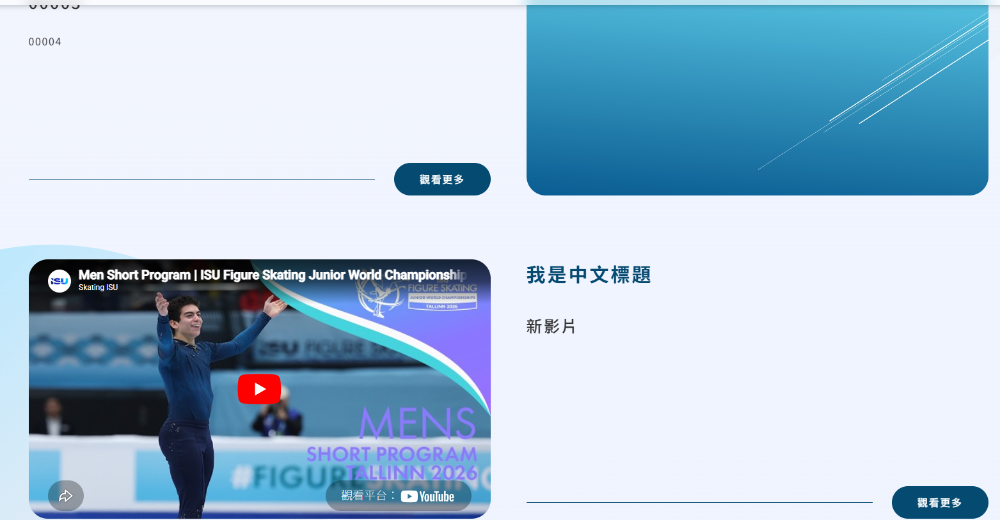
圖 52｜影音區塊：前台呈現效果
欄位詳細說明表
| 欄位名稱 | 設定說明與備註 |
|---|---|
| 顯示區塊名稱 | 前台區塊顯示的標題文字。 |
| 顯示筆數 | 決定此區塊一次抓取幾筆最新消息。 |
| 影音 URL | 貼入 YouTube 或其他影音服務的嵌入代碼。 |
8. 圖片區塊設定
介面截圖與操作


欄位詳細說明表
| 欄位名稱 | 設定說明與備註 |
|---|---|
| 區塊名稱 | 前台顯示的標題。 |
| 顯示筆數 | 決定此區塊內放置幾張圖片。 |
| 連結網址 | 點選單張圖片時跳轉的連結。 |
| 圖片上傳 | 建議符合建議比例，系統會自動裁切。 |
9. 最新消息發布
-
Step 1. 建立消息分類標籤
 圖 55｜建立消息分類標籤
圖 55｜建立消息分類標籤 -
Step 2. 建立標題與發布日期
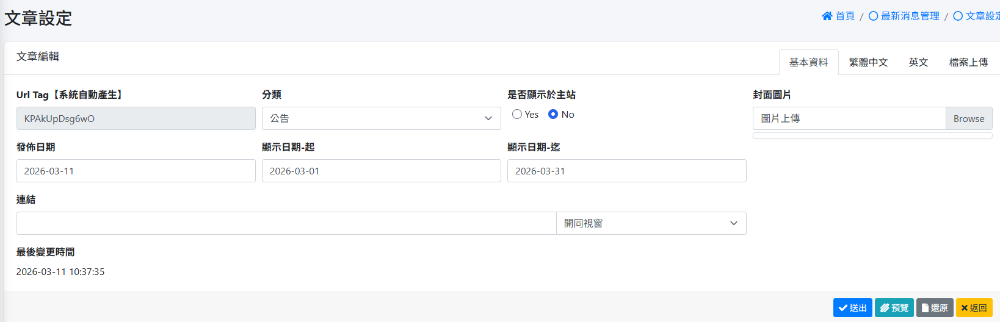
圖 56｜建立標題與發布日期 -
Step 3. 進入編輯器撰寫內文細節
 圖 57｜進入編輯器撰寫內文細節
圖 57｜進入編輯器撰寫內文細節
展示效果與最終內頁
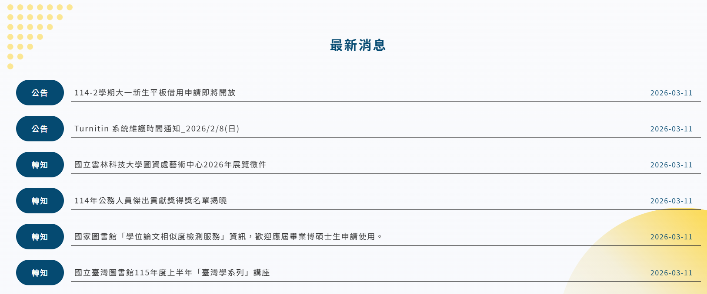
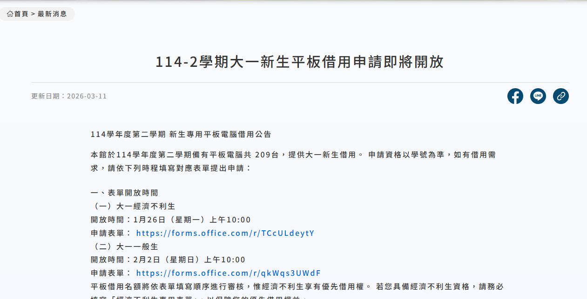
文字說明與欄位定義
| 管理層級 | 用途說明與建議 |
|---|---|
| ① 分類設定 | 例如：公告、轉知、活動。 |
| ② 文章設定 | 設定文章的標題、日期、代表圖及是否置頂。 |
| ③ 文章編輯 | 使用編輯器上傳圖片、排版文字，決定內頁呈現模樣。 |